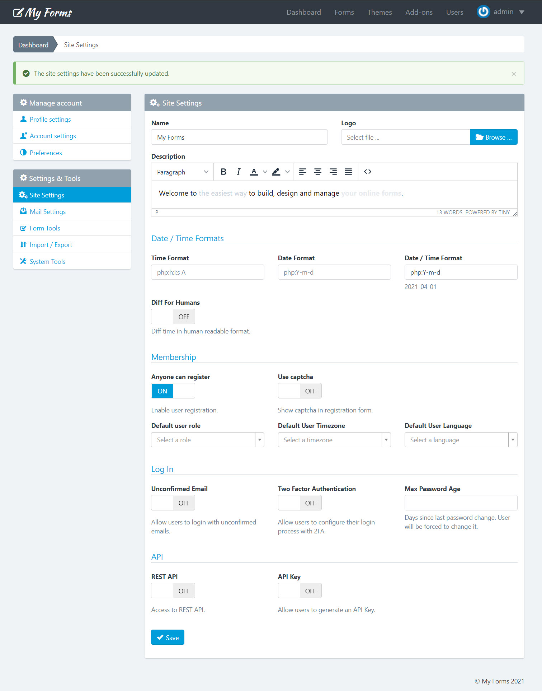
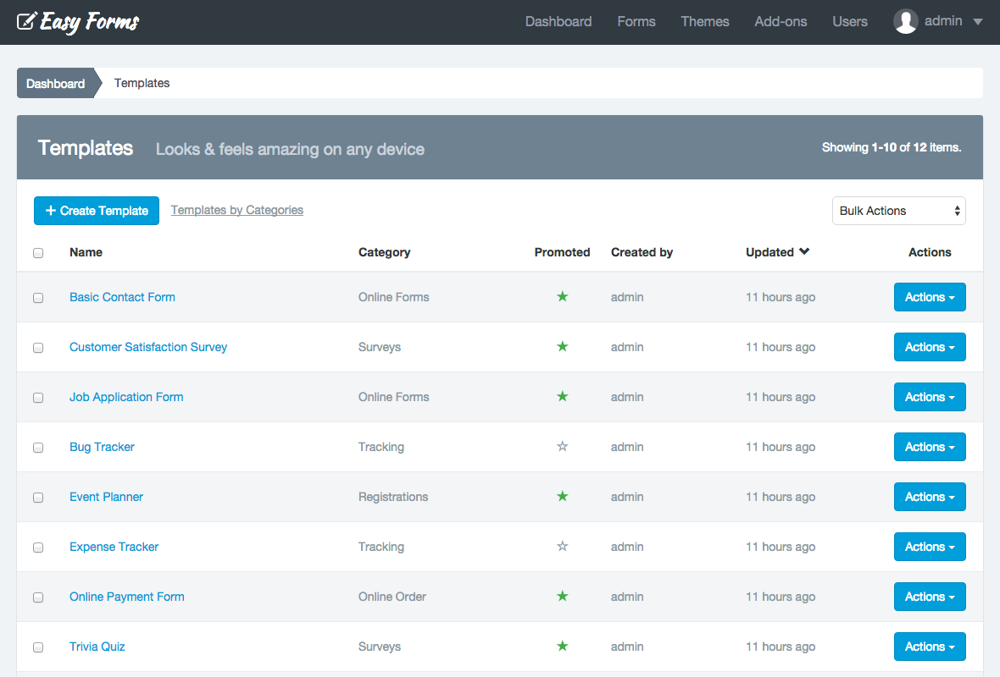
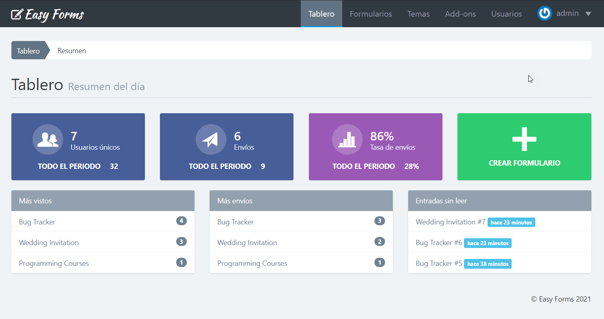
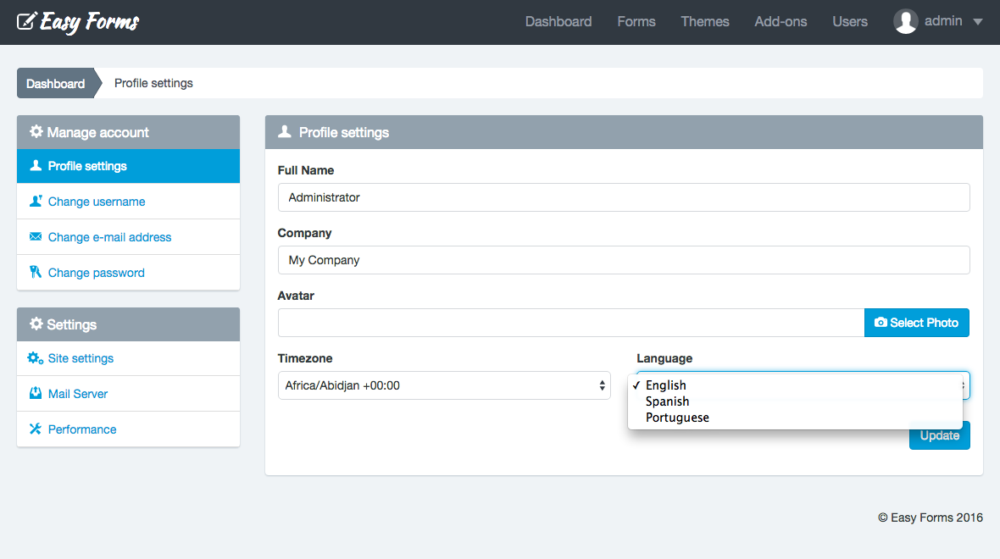

Customizing Easy Forms ¶
- Introduction
- Changing the logo
- How to enable GeoLocation?
- How to configure your Cron Job?
- Changing the number of rows
- Limit Access to the Login Page to Specific IP Addresses
- How to improve your Session Security?
- Change Date / Time Formats
- Change language
- Add a new language
- How to enable DEBUG mode
- How to fix issues about File Permissions
Introduction ¶
Easy Forms is an application developed in object oriented PHP under the MVC pattern. If you have programming skills, it will be easy to customize Easy Forms according to your requirements. However, this guide is intended for users who don't have programming knowledge.
Note:
@apprefers to the application root directory.
Changing the logo ¶
The first thing to do to customize your application is change the logo. The logo is not an image but a text that you can modify by simply renaming the application.
To change the logo you must follow the next steps:
- Click on your username in the navigation menu.
- Click "Settings".
- Change the name to 'My Forms' or the name you prefer, better one short.
- Click "Update".
But, if you want to replace the logo with an image, just follow the next steps:
- Click on your username in the navigation menu.
- Click "Settings".
- Click the "Browser" button and select your image (Suggested size: Height: 60px, Width: auto).
- Click "Update".
In both cases, the page will reload and will show a message to let you know that the update has been successful. Now 'My Forms' or your image will appear as the application logo.

How to enable GeoLocation? ¶
Easy Forms allows you to capture the User geolocation based on IP Addresses or in Browser Geolocation (with Google Maps). This guide refers to IP Geolocation.
To enable IP Geolocation, your must upload the GeoLite2 DB to your server.
Upload the GeoLite2 DBs ¶
GeoLite2 databases are free IP GeoLocation databases and are needed to collect your users' geographical location. Therefore, you must:
- Download GeoLite2 City and GeoLite2 Country databases.
- Unzip the files and place them in the directory
@app/components/analytics/enricher/GeoIP. - Verify that the files match these paths:
- @app/components/analytics/enricher/GeoIP/GeoLite2-City.mmdb
- @app/components/analytics/enricher/GeoIP/GeoLite2-Country.mmdb
By default, the application displays its maps in the Submission Details page with Leaflet, the leading open-source JavaScript library for mobile-friendly interactive maps. However, you can use Google Maps by adding your Google Maps Api Key to the configuration file.
How to configure your Cron Job? ¶
To know your cron job command you must follow the next steps:
1. Click on your username in the navigation menu.
2. Click "Settings".
3. Click on "System Tools".
4. Copy the Cron Job command.
To configure the cron job with cPanel, perform the following steps:
1. Go to your cPanel
2. Click on Cron Jobs
3. Go to Add New Cron Job section
4. Select: Common Settings: Once Per Minute (* * * * *)
5. Paste the Command (of the previous step)
6. Press Add New Cron Job button
Changing the number of rows ¶
The Form Manager displays 5 rows by default, Submission Manager, User Manager and others. You can change this very easily.
For that:
- Open the file
@app/config/params.php. - Change the value of
'GridView.pagination.pageSize'to `10 or the number of rows you want. - Save the file.
When you return to the app it will display the number of rows you have defined.

Note: Additionally, each user can set his preferred number of rows. You just need to choose the number of rows below the GridView. The selected value will be stored in your User Preferences and will be used instead of the default value.
Limit Access to the Login Page to Specific IP Addresses ¶
Securing your site is important. After all, it means you are protecting not only your personal information and data, but also any information your users collect on your site.
To limit the access to the login page to one or multiple static IP addresses:
- Open the following file:
@app/config/params.php - Add one or more IP Addresses to the 'App.User.validIps' key
- Save the file
That's it! When an unauthorized visitor tries to access that page, he’ll see an 404 error - Page Not Found.
Note: If you're not sure which is your IP address, just ask Google. Just enter “What is my IP” and Google will tell you.
How to improve your Session Security? ¶
You can control when an inactive user session expires. The default session timeout is 20 minutes of inactivity. When the session timeout has been reached, users will be prompted with a dialog that allows them to log out or continue working. If they don’t respond to this prompt, they will be logged out.
To configure the Timeout value by default, just follow these steps:
- Open the file
@app/config/params.php. - Change the value of
'App.User.SessionTimeout.value'to 0 to disable or 7200000 (2 hours). - Change the value of
'App.User.SessionTimeout.warning'to 0 to disable or 60000 (1 minute). - Save the file.
Take into account that each user can set up his own session timeout value or disable it if he wants.
To configure the Timeout value for a user account, just follow these steps:
1. Click on your username in the navigation menu.
2. Click "Manage Account"
3. Click "Preferences"
4. Select a "Timeout value" between 15 minutes and 24 hours
5. Click Save
Note: Choose a shorter timeout period if your account has sensitive information, and you want to enforce stricter security.
Change Date / Time Formats ¶
By default, the application uses a human-readable format such as "1 hour", "5 mins", "2 days". Now you can disable this format to use a date and time format and additionally, you can customize this format for the entire application quickly.
You can specify date and time formats using the ICU syntax. Also you can use the PHP syntax with a prefix php: to differentiate it from ICU syntax.
For example:
ICU format
yyyy-MM-dd => 2021-04-01
PHP format
php:Y-m-d => 2021-04-01
Change language ¶
Easy Forms comes with the English language by default. However, it let each user change the whole application language very easily, allowing them to see it in their own language.
Change the application language for a user ¶
- Go to the User Manager
- Click on the "Actions" button of the User to update
- Click "Update"
- Change the language to Spanish
- Click "Save"
From now on, if your user accesses the application, he will see the interface in Spanish.
Note: Keep in mind that at any moment your user can change the application language. For this, he will only need to update the field Language on his User Profile.
Change the default application language ¶
- Open the configuration file
@app/config/web.php. - Find the line:
'language' => 'en-US’, and replace'en-US'for another language you have translated, to Spanish for example:‘es-ES’.
When you reload the application you will see that the application default language is Spanish.

Add a new language ¶
To add a new language to the application, you basically need two things:
- Translate English strings to the new language.
- Add the new language to the list of languages supported by the application.
1. Translate strings ¶
To translate strings you must do the following:
- Locate the
@app/messagesfolder and create a new folder which name include the ISO language code (in lowercase) and the ISO country code (in uppercase), separated by a hyphen. For example, Brazilian Portuguese, 'pt-BR'. - Then copy the file app.php from the 'es-ES' folder and paste it into your new folder. Let's say in 'pt-BR'.
- Then translate strings from English to the new language (To continue our example, replace strings in Spanish to Portuguese).
- Save the file and the application will be translated to the new language.
2. Add new language to the application ¶
To add your new language:
- Open the file @app/helpers/language.php
- Add the line
"pt-BR" => Yii :: t ('app', 'Portuguese'),tosuportedLanguage()method. - Save the file
Following the example, the method should end like:
public static function supportedLanguages()
{
return array(
"en-US" => Yii::t('app', 'English'),
"es-ES" => Yii::t('app', 'Spanish'),
"pt-BR" => Yii::t('app', 'Portuguese'),
);
}
From now on, when you enter the application, you can change the language to portuguese from your User Profile.

Note: Keep in mind that the text you type in the source code must be in English.
Additional Step
As added the 'Portuguese' string to the application, it is recommended to translate this string in both Spanish and Portuguese:
- Open the file
@app/messages/es-ES/app.phpand add‘Portuguese’ => ‘Portugués’,. - Open the file
@app/messages/pt-BR/app.phpand add‘Portuguese’ => ‘Português’,.
How to enable DEBUG mode ¶
To enable DEBUG mode you must remove the // characters (lines 3 and 4) in the @app/index.php file. Then, you will be able to see the error message and stack trace.
Important! After fix any issue or make any customization but before deployed to production, you must comment out the same two lines.
How to fix issues about File Permissions ¶
For the application's correct operation you must ensure the following folders (including files and sub-folders) have the proper file permissions:
- Runtime directory:
chmod -R 0755 @app/runtime - Assets directory:
chmod -R 0755 @app/assets - Static Files directory:
chmod -R 0755 @app/static_files - Configuration files:
chmod -R 0755 @app/config
If web server is not the files owner, but is member of the group that owns the files, you can set the file permissions to 0775. As last resource (only for your local env), you can set your file permissions to 777, just to discard any issue related to the files.
For example, if you use an FTP client such as Filezilla:
1. Open your FTP client
2. Right-click on 'runtime' directory and click on 'File permissions...'
3. Write 755
4. Check 'Recurse into subdirectories' and 'Apply to all files and directories'
5. Press ok
6. Repeat the same steps with the 'assets', 'config' and 'static_files' directories.
8. Write 755 and Press ok
Note: If you have any issue with file permissions, get in touch with our support team, and we will be more than happy to help you.